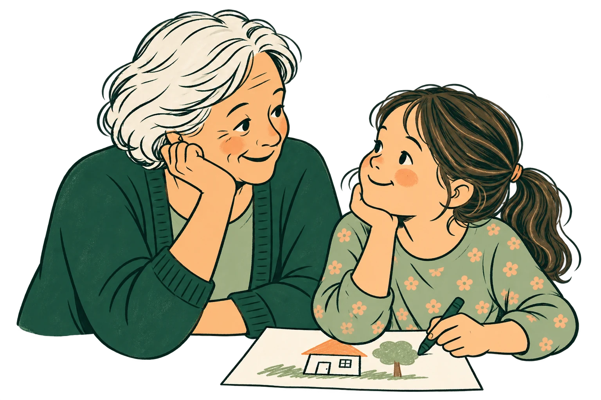

עצמאות קטנה. קשר גדול.
הילדים מדברים.
אתם בוחרים.
שיחות עם האנשים שבחרתם,
דרך חשבון ה־WhatsApp של ההורה.
מתקינים ל־Windows ול־Linux בפיתוח.
אין הורדה זמינה כרגע.

מהבחירה שלכם, לשיחה שלהם
המחשה בלבדההורה מסמן שיחות, הן עוברות למסך של נועה, ונועה מתכתבת עם סבתא דרך חשבון ההורה.
גם לזמן יש מקום.
מכסת זמן יומית לכל ילד, ואפשרות להוסיף זמן לפי הצורך.
לפני שמתחילים
כמה דברים
שחשוב לדעת.
האם לילד צריך להיות חשבון WhatsApp?+
לא נדרש חשבון נפרד לילד לצורך ההתכתבות דרך יחד. ההודעות נשלחות מהחשבון של ההורה וכוללות את שם הילד.
האם הילד רואה את כל השיחות שלי?+
לא. אתם בוחרים אילו שיחות וקבוצות זמינות בממשק של יחד, ויכולים לבטל את הגישה.
איך הילדים משתמשים ביחד?+
דרך הממשק המשפחתי בדפדפן במחשב או בטאבלט. מתקיני Windows ו־Linux הפשוטים עדיין אינם זמינים.
אפשר להגדיר זמן שונה לכל ילד?+
כן. יחד כוללת מכסות יומיות גמישות, הצגת הזמן שנותר ואפשרות להורה להאריך.
האם יחד היא מוצר של WhatsApp?+
לא. יחד היא אפליקציה נפרדת, ואינה מוצר רשמי של WhatsApp או Meta. החיבור ל־WhatsApp אינו רשמי: הוא עלול להפסיק לעבוד או להוביל להגבלת חשבון ההורה. חשוב לקחת זאת בחשבון לפני שמחברים חשבון.
הורדה
המתקין בדרך.
כרגע אין קובץ להורדה. כשמתקין יהיה מוכן וייבדק, הכפתור שלו ייפתח כאן.
Windows
בהכנה. ההורדה תיפתח כשקובץ ההתקנה יהיה מוכן וייבדק.
Linux
בהכנה. ההורדה תיפתח כשהקובץ יהיה מוכן וייבדק.